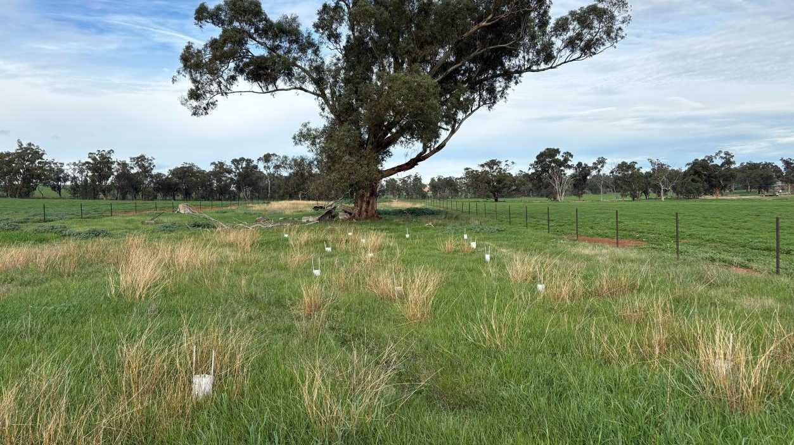
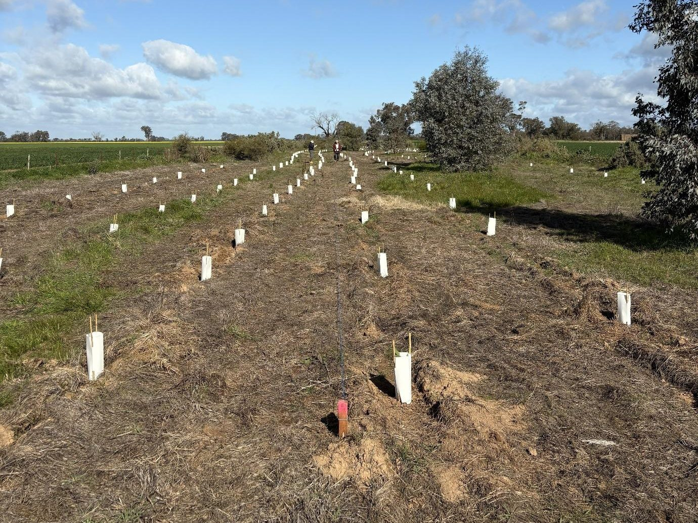
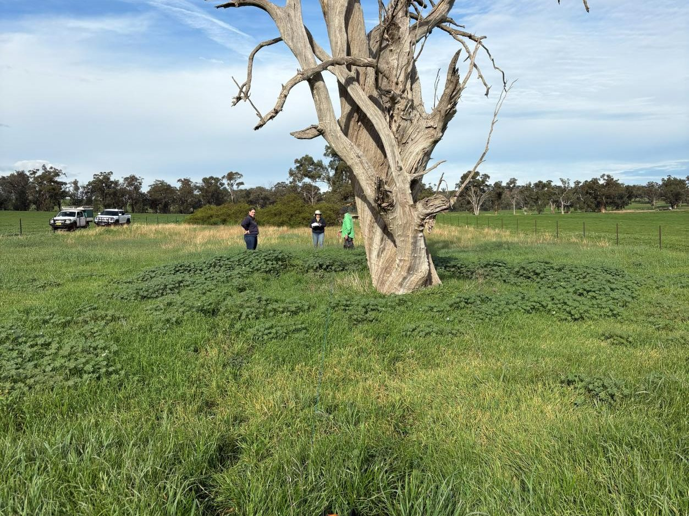
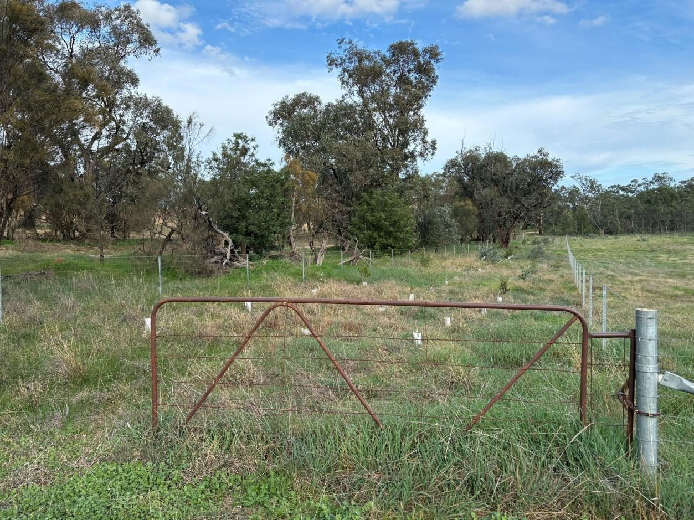
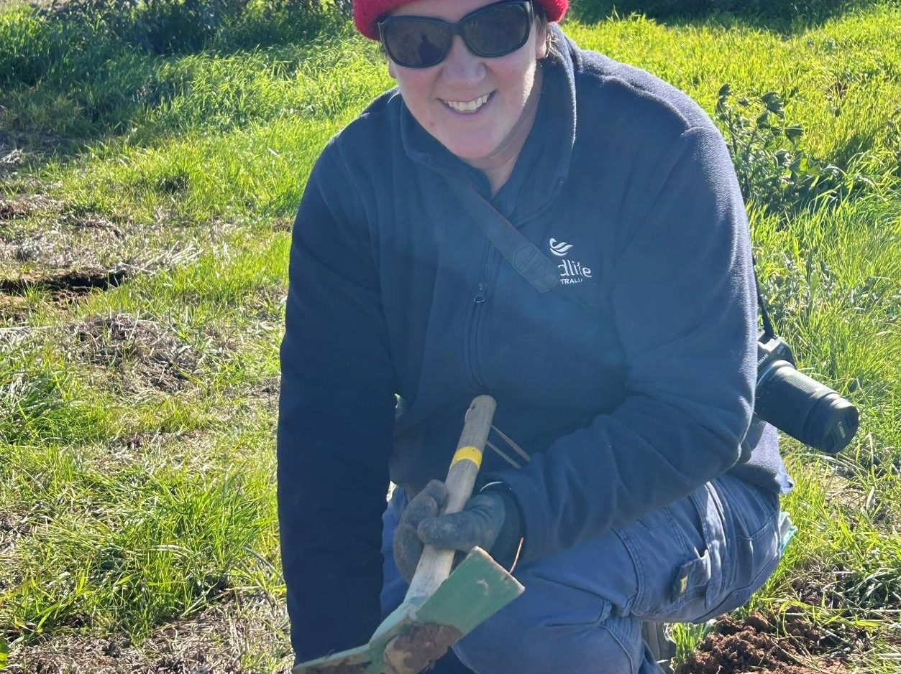
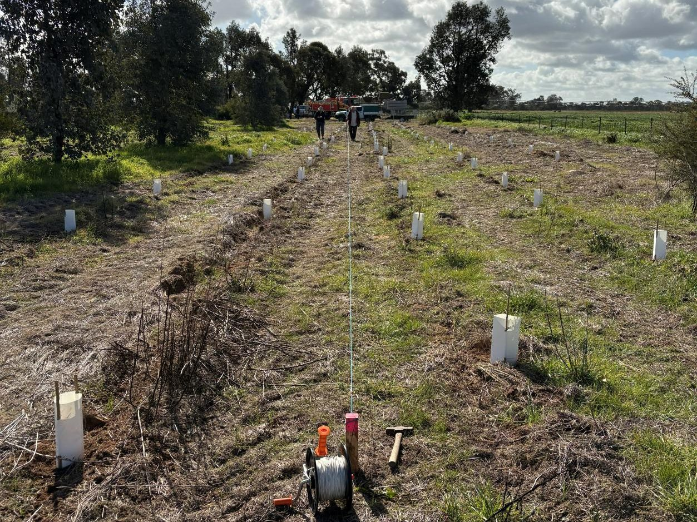
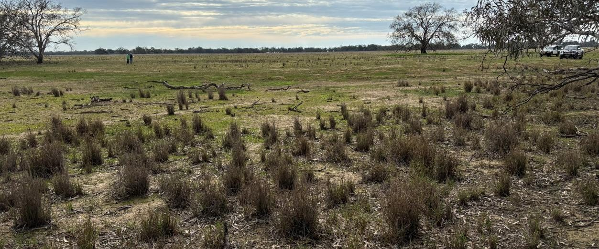
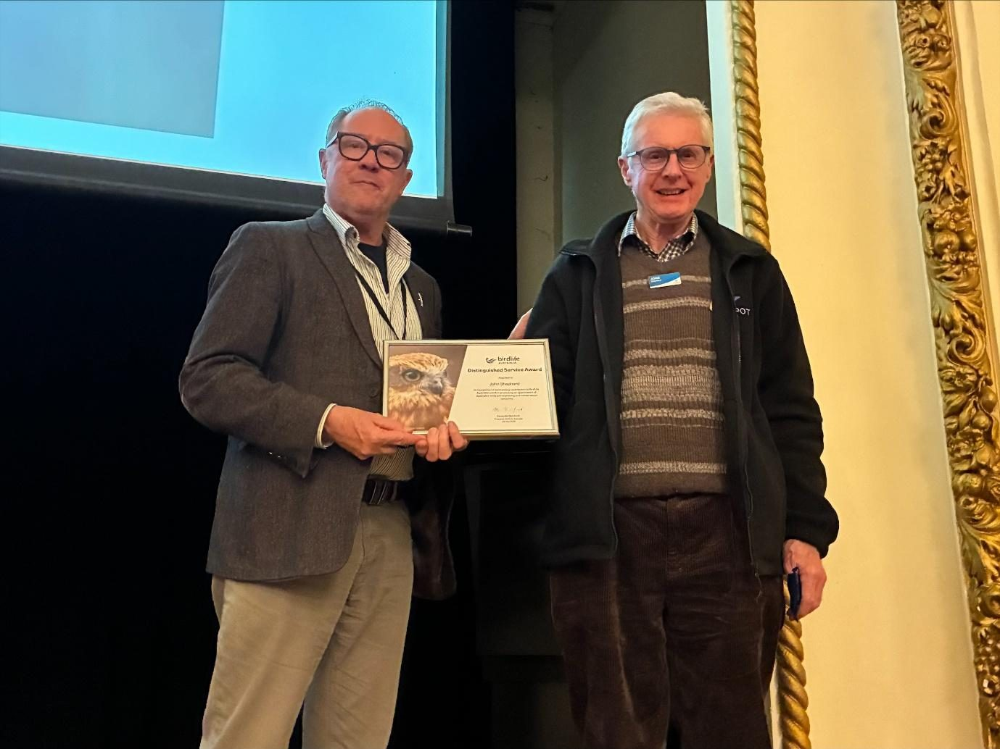

Saving Species
QLD
Saving Species
QLD

Saving Species
Nectar Sippers
Three woodland birds that follow the flowering, a farming landscape they can no longer cross, and four years spent giving them somewhere to land.
130Hectares protectedWoodland bird habitat secured in the final year, under ten-year stewardship agreements.
122Bird species recordedAcross 194 surveys in the last twelve months of monitoring.
220Monitoring plotsOn 23 properties, up from 80 plots when the second phase began.
Figures from BirdLife Australia’s final project report, August 2026.

The problem
Birds that follow the flowering, in a landscape that stopped flowering
The Little Lorikeet, the Black-chinned Honeyeater and the Dusky Woodswallow live in the inland grassy woodlands of southern New South Wales. They do not hold a territory the way a robin does. They move across the landscape chasing whatever is in blossom, which means their survival depends on having enough patches of woodland close enough together to travel between.
Almost all of that country is now private farmland, and most of it has been cleared, grazed or broken into pieces too far apart to cross. A bird that finds a good flowering tree can still find nothing else around it: no understorey, no hollow, nowhere to nest.
The records were thin as well. Formal sightings were sparse in exactly the districts that mattered most, so the first problem was not knowing where these birds still were.

The approach
A habitat plan, and a ten-year promise from the landholder
We fund this alongside BirdLife Australia and the New South Wales Government’s Saving our Species program. BirdLife works with a landholder to write a habitat plan for their property, one that improves conditions for woodland birds and still works as a farm. Where a plan gets funded, the landholder signs a ten-year stewardship agreement and the work starts.
On the ground that means stock-proof fencing around remnant woodland, repairs to fencing that already exists, changes to grazing so the understorey can return on its own, and planting where the gaps between patches are too wide for a small bird to cross.
The ten years are the part that matters. A fence and five hundred seedlings are only worth funding if the paddock is still protected by the time those trees are old enough to hold a hollow.


How it gets done
It works because Landcare knows the neighbours
BirdLife Australia leads the project, but the introductions come from Landcare. Corowa District Landcare and West Hume Landcare sit between the science and the farm gate, and they are the reason landholders stay with something that asks for a decade of their time. Eastern Riverina Landcare, Holbrook Landcare Network and a handful of other groups have carried the work further across the district.
Greening Australia brought direct seeding to one of the largest fenced sites, adding understorey to a hundred and five hectares that this project had already protected. Birders Albury Wodonga, the Murrumbidgee Field Naturalists and the Ovens and Murray branch of BirdLife supply the people who can tell one honeyeater from another at forty metres.
“Connecting local Landcare staff to landholders has helped maintain their momentum, motivation and excitement in what they are doing. The greatest success would have to be building landholders’ confidence in the conservation efforts they are implementing on their properties for birds.”
The community
Five hundred seedlings, forty-two people, one winter morning.
In July 2026, forty-two people planted five hundred tubestock at Buraja Station near Lowesdale in a single day. That was one of six engagement activities in the final year, alongside training workshops, a field first aid day for landholders and volunteers who often work alone on remote properties, and a quarterly newsletter that keeps the district in touch with its own results.
Volunteers gave more than five hundred hours of their own time across that year, monitoring birds, running events and putting plants in the ground.
Drought made the last two seasons harder than the plan allowed for. Several landholders held off planting until there was enough rain to give the seedlings a chance, and we moved the timelines rather than push tubestock into dry ground. Interest in restoration ran past what the project could fund in its final year, and the site assessments and mapping have been passed on so someone else can pick them up.


The evidence
What four years of counting actually showed.
In the final year, landholders and volunteers completed 194 surveys across 220 monitoring plots on 23 properties and recorded 122 bird species. Dusky Woodswallow turned up in six of those surveys across five plots, a higher reporting rate and a higher occupancy rate than any previous year of the project. Neither the Black-chinned Honeyeater nor the Little Lorikeet was recorded during the surveys, although both are known to be in the region.
That is an honest result rather than a triumphant one, and it is exactly what standardised counting is for. The survey effort itself has nearly tripled, from 80 plots across 20 properties in 2022 to 220 plots across 23 properties in 2026. A monitoring network that size will pick up a change in these birds when one comes.
Habitat moves slower than a funding cycle. The fencing, the grazing changes and the plantings are in the ground now, and the ten-year agreements are what carry them well past the end of the grant.


Why it matters
The people who kept turning up
One of the volunteers who has surveyed birds on farms for this project was awarded BirdLife Australia’s Distinguished Service Award in the final year. It is worth naming what that recognises: someone returning to the same plots four times a year, for years, to write down what is there.
The fences and the plantings are on the ground and protected for a decade. The people who count the birds are the reason anyone will know whether it worked.
Related reading
More on this work.
More from this pillar
Related projects


Help fund work like this.
Every FNPW project is powered by donations, bequests and partnerships.